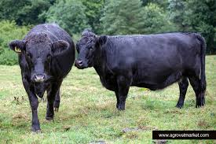

el mundo de la ganadería
razas
brahman
Ganado Caprino
Cada raza tiene características únicas que las hacen más adecuadas para diferentes climas, 
sistemas de manejo y objetivos
de producción. Elegir la raza adecuada depende de tus necesidades específicas y condiciones locales.
Las razas de carne se destacan por su capacidad de ganancia de peso y la calidad de su carne.
**Origen**: Escocia
- **Características**: Son de tamaño medio, sin cuernos y generalmente de color negro o rojo. 
- **Ventajas**: Son resistentes al frío y se adaptan bien a climas diversos. Su carne es apreciada por su marmoleo, que mejora la calidad y el sabor.
- **Hereford**:
- **Origen**: Inglaterra.
- **Características**: Color rojo con cara blanca. Son dóciles y de fácil manejo.
- **Ventajas**: Son resistentes y se adaptan a distintos climas. Su carne es tierna y magra.